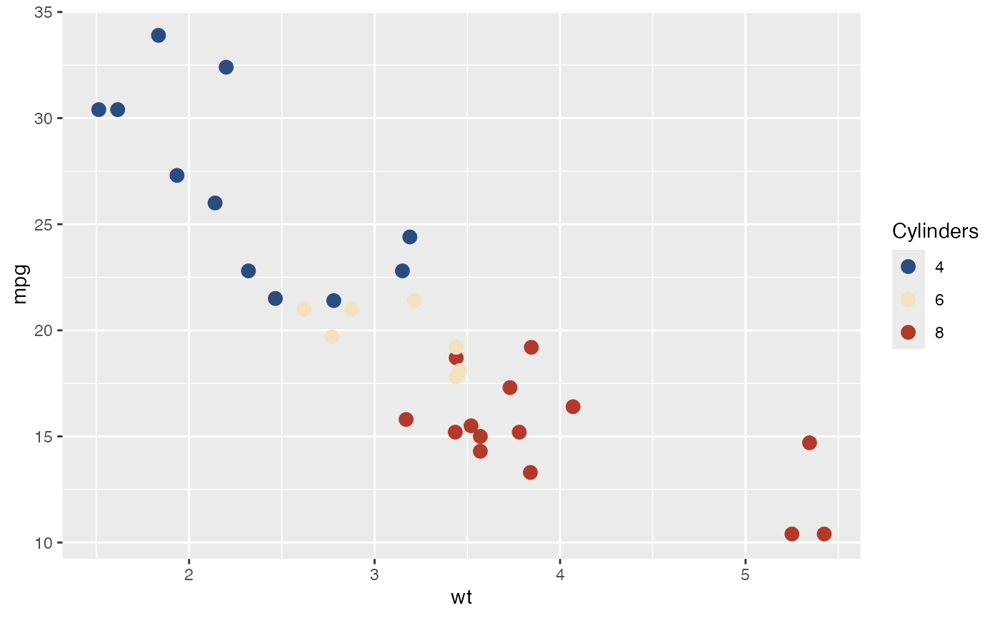
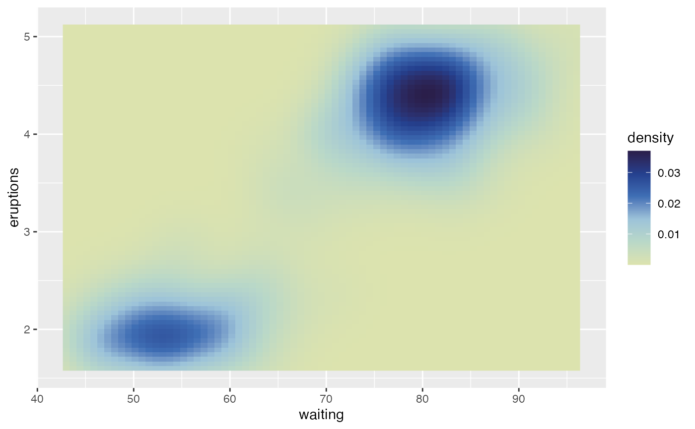
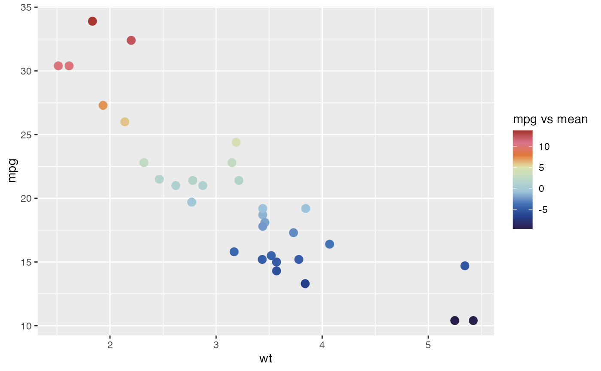
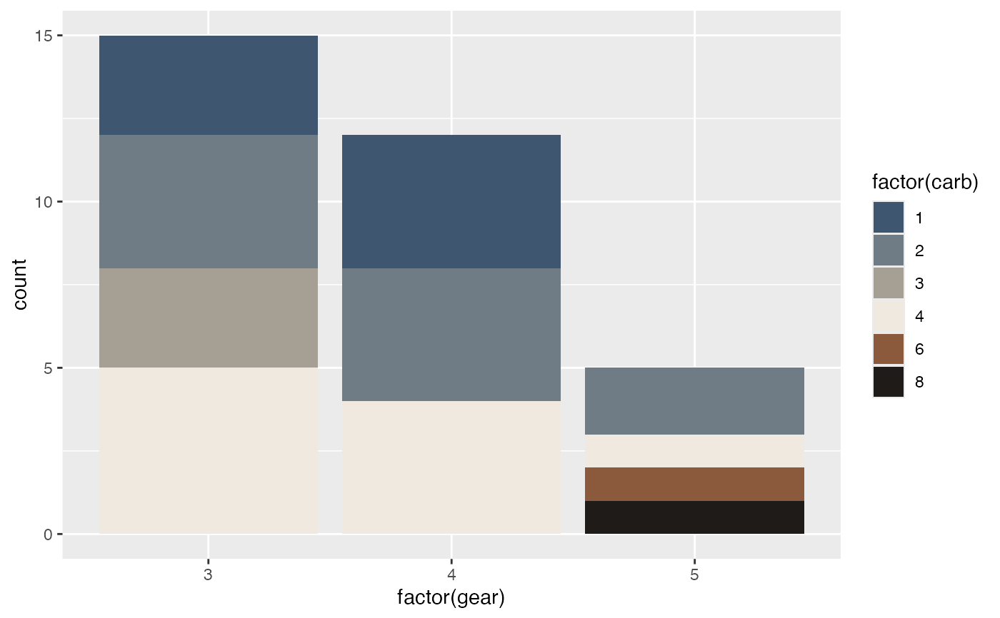

Discrete or continuous color and fill scales built from a Portinari palette.
They are ordinary ggplot2 scales and accept the usual arguments (name,
labels, breaks, guide, ...). Match the palette category to the data:
qualitative palettes for unordered groups, sequential palettes for ordered
values, and diverging palettes for values around a midpoint (see
portinari.palettes()).
Usage
scale_color_portinari(
palette = "cafe",
type = c("discrete", "continuous"),
direction = 1,
colorblind = FALSE,
...
)
scale_colour_portinari(
palette = "cafe",
type = c("discrete", "continuous"),
direction = 1,
colorblind = FALSE,
...
)
scale_fill_portinari(
palette = "cafe",
type = c("discrete", "continuous"),
direction = 1,
colorblind = FALSE,
...
)Arguments
- palette
Name of the palette. See
portinari.palettes().- type
"discrete"(default) for categorical variables, or"continuous"for numeric variables.- direction
1(default) or-1to reverse the palette.- colorblind
If
TRUE, only colorblind-safe colors are used.- ...
Further arguments passed to
ggplot2::discrete_scale()(discrete) orggplot2::scale_colour_gradientn()/ggplot2::scale_fill_gradientn()(continuous).
Examples
library(ggplot2)
#> Warning: package ‘ggplot2’ was built under R version 4.5.2
# Qualitative: unordered groups
ggplot(mtcars, aes(wt, mpg, colour = factor(cyl))) +
geom_point(size = 3) +
scale_color_portinari("cafe", name = "Cylinders")

# Sequential: ordered values
ggplot(faithfuld, aes(waiting, eruptions, fill = density)) +
geom_raster() +
scale_fill_portinari("guerra_azul", type = "continuous", direction = -1)

# Diverging: values around a midpoint
ggplot(mtcars, aes(wt, mpg, colour = mpg - mean(mpg))) +
geom_point(size = 3) +
scale_color_portinari("guerra", type = "continuous", name = "mpg vs mean")

# Diverging, discrete: an ordered scale with a neutral middle
ggplot(mtcars, aes(factor(gear), fill = factor(carb))) +
geom_bar() +
scale_fill_portinari("retirantes")
